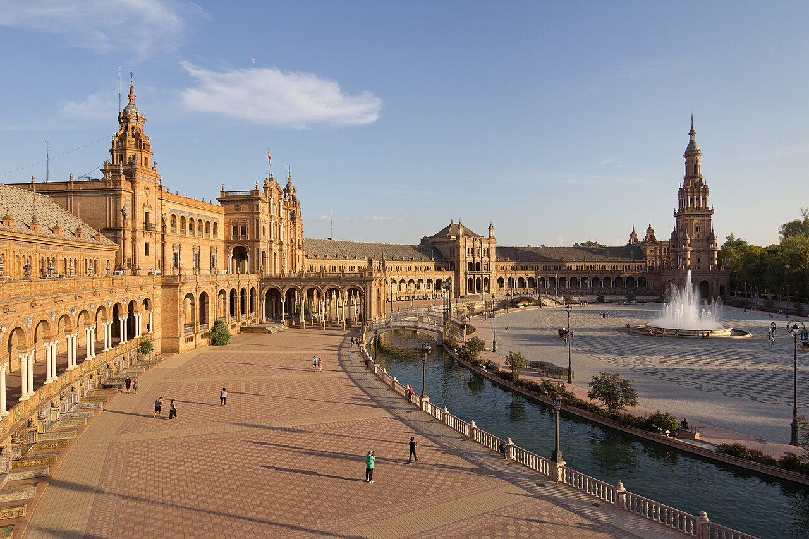
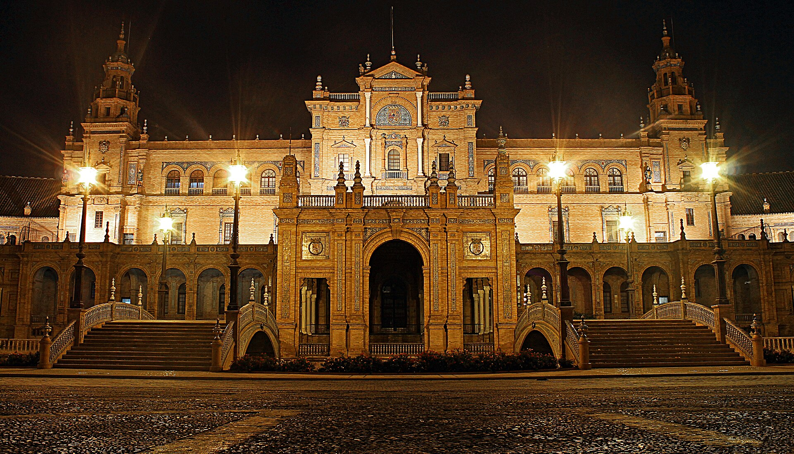
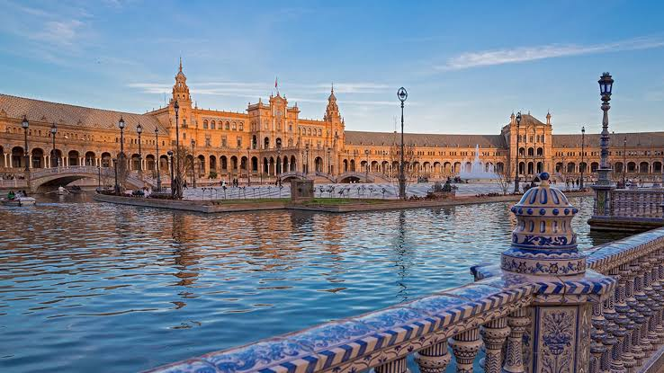

INICIO
La plaza de España es un conjunto arquitectónico enclavado en el parque de María Luisa de la ciudad de Sevilla (Andalucía, España). Fue proyectada por el arquitecto Aníbal González. Se levantó entre 1914 y 1929 y es la construcción más grande de la Exposición Iberoamericana de 1929. Es una plaza semicircular con un gran edificio central que alberga un cuartel general del Ejército de Tierra, galerías con estructuras que albergan escaleras monumentales y, en los extremos, dos edificios con torres que albergan organismos estatales. Tiene una ría atravesada por cuatro puentes y una fuente central. Está decorada con 48 bancos dedicados a las provincias españolas, 52 medallones personajes ilustres de la historia de España y escudos heráldicos. En una de las galerías está la entrada al Museo Histórico Militar de Sevilla. En julio de 2023 fue declarada bien de interés cultural.

CONSTRUCCIÓN
Aníbal González asumió la ejecución del proyecto y realización de la plaza, en la que también trabajaron algunos de sus colaboradores como el ingeniero José Luis de Casso Romero y el arquitecto Aurelio Gómez Millán. Las obras comenzaron en agosto de 1914. Por entonces se iniciaron los trabajos de explanación y movimiento de tierra. El presupuesto previsto en 1914 ascendió a 628 500,70 pesetas. En 1929 había alcanzado las 15 310 365 pesetas. Tras añadir otros gastos de última hora, el coste rebasó los 17 millones de pesetas. El 9 de mayo de 1929 se realizó en la Plaza de España la ceremonia de inauguración de la Exposición Iberoamericana con la presencia de Alfonso XIII, Victoria Eugenia y demás autoridades.

LA RESTAURACIÓN ENTRE 2002 Y 2010
La plaza de España fue objeto de un importante proceso de restauración que comenzó en 2002 y finalizó el 17 de octubre de 2010 con una serie de actos conmemorativos para su reinauguración. Los elementos de cerámica fueron restaurados por el taller Plaza de España, creado por Patrimonio del Estado, el Servicio Andaluz de Empleo y el Ayuntamiento de Sevilla. Se tuvieron que sustituir por réplicas casi un 25% de los azulejos de los bancos de provincias, así como el 90% de las librerías y balaustradas de cerámica. Se hicieron 20 farolas de cerámica para la balaustrada exterior, que habían desaparecido en fecha indeterminada. Mientras duraron las obras de restauración la ría de la plaza estuvo seca. Durante este tiempo fue impermeabilizada. Luego, volvió a llenarse. Se incorporó una estación de tratamiento de aguas realizada por EMASESA y Befesa. El agua es renovada y usada luego para el riego del parque de María Luisa. El agua para llenar la ría procede de un pozo que se encuentra cerca de la Torre Sur. En 2009 Antonio Jaramillo Morilla y Emilio José Mascort Albea, profesores de Ingeniería del Terreno de la Escuela Superior de Arquitectura de Sevilla, hicieron un estudio independiente que señalaba que antes de construir la plaza se había realizado la ría. El estudio indicaba que el secado de la ría para la restauración había provocado la inclinación de las dos torres 12 y 5 centímetros respectivamente. En 2006 se hizo un recalce con micropilotes de diez metros en la torre Norte, que según Jaramillo era insuficiente. Este profesor también consideraba un error impermeabilizar la ría.
